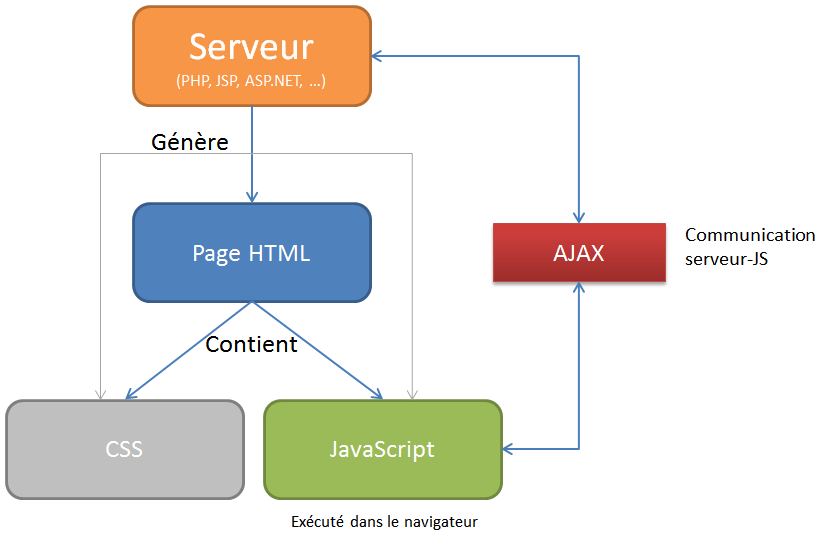

Initiation au JavaScript
Texte Explicatif : Qu'est-ce que le JavaScript ?
JavaScript est un langage de programmation dynamique utilisé pour rendre les pages web
interactives. Contrairement au HTML qui structure le contenu, et au CSS qui le met en forme,
JavaScript permet d'ajouter de l'interactivité à une page web. Il peut être utilisé pour
réagir aux actions de l'utilisateur, manipuler le contenu HTML et CSS en temps réel, ou
encore interagir avec des serveurs distants pour obtenir et envoyer des données.
JavaScript est essentiel dans le développement web moderne et est exécuté directement dans
le navigateur web. Grâce à JavaScript, il est possible de créer des éléments dynamiques tels
que des formulaires interactifs, des menus déroulants, des diaporamas, des jeux, et bien
plus encore.
Exemple de base en JavaScript
Voici un exemple simple de JavaScript intégré dans une page HTML pour afficher un
message lorsqu'un utilisateur clique sur un bouton :
<!DOCTYPE html>
<html lang="fr">
<head>
<meta charset="UTF-8">
<title>Ma première page HTML</title>
</head>
<body>
<h1>Bienvenue sur ma page</h1>
<button onclick="afficherMessage()">Cliquez
ici</boutton>
<script">
function afficherMessage() {
alert("Bonjour ! Vous avez cliqué sur le bouton.");
</script>
</body>
</html
Explication du code :
<button> : Un bouton HTML qui déclenche une action lorsque l'utilisateur clique dessus
grâce à
l'attribut onclick.
<script> : La balise < script > contient le code JavaScript à exécuter.
function afficherMessage(): Une fonction JavaScript définissant une action qui est exécutée lors
du clic sur le bouton.Ici, la fonction déclenche une boîte de dialogue avec un message.

Les Bases du JavaScript
1. Variables
Les variables en JavaScript permettent de stocker des valeurs (nombres, chaînes de caractères,
objets, etc.) pour les utiliser plus tard dans votre programme. Les trois mots-clés pour
déclarer une variable sont var, let, et const.
let nom = "Jean";
const age = 30;
var ville = "Paris";
let : Utilisé pour déclarer une variable dont la valeur peut changer.
const : Utilisé pour déclarer une constante, c'est-à-dire une valeur qui ne peut pas être
modifiée.
var : Ancienne manière de déclarer une variable (remplacée par let ou const en ES6).
2. Fonctions
Les fonctions en JavaScript permettent de regrouper des blocs de code réutilisables. Une
fonction peut prendre des paramètres et retourner un résultat.
function addition(a, b) {
return a + b;
}
let resultat = addition(3, 5); // retourne 8
3. Conditions
Les structures conditionnelles permettent d'exécuter différents blocs de code en fonction de
certaines conditions.
let age = 18;
if (age >= 18) {
console.log("Vous êtes majeur.");
} else {
console.log("Vous êtes mineur.");
}
4. boucles
Les boucles permettent d'exécuter plusieurs fois un bloc de code tant qu'une condition est
remplie.
for (let i = 0; i < 5; i++) {
console.log(i); // Affiche 0, 1, 2, 3, 4
}
5. Manipulation du DOM (Document Object Model)
Le DOM est une interface de programmation pour les documents HTML et XML. JavaScript permet de
manipuler le DOM pour changer dynamiquement le contenu et la structure d'une page web. Par
exemple, vous pouvez utiliser JavaScript pour modifier du texte, ajouter ou supprimer des
éléments HTML, ou changer des styles CSS directement depuis le script.
Voici comment modifier le contenu d'un élément HTML avec JavaScript :
HTML :
<p id="texte">Ceci est du texte par
défaut.</p>
<button onclick="changerTexte()">Changer le texte</button>
<script>
function changerTexte() {
document.getElementById("texte").innerHTML = "Le texte a
été modifié!";
}
</script>
Dans cet exemple, la fonction changerTexte() change le texte à l'intérieur de la balise
lorsque le bouton est cliqué.
Les Événements JavaScript
JavaScript réagit souvent aux actions de l'utilisateur, appelées événements. Ces événements
peuvent inclure des clics, des mouvements de souris, des touches pressées, et bien d'autres
actions.
Exemple : Intercepter un clic
Voici un exemple d'utilisation de JavaScript pour intercepter un clic et réagir à cet événement
:
HTML :
<button id="monBouton">CCliquez-moi</button>
<script>
document.getElementById("monBouton").addEventListener("click",
function() {
alert("Vous avez cliqué sur le bouton !");
});
</script>
Dans cet exemple, lorsqu'un utilisateur clique sur le bouton, un message s'affiche via une
alerte.
Les Méthodes pour Ajouter JavaScript
JavaScript peut être ajouté à une page de différentes manières :
1. JavaScript Externe
La meilleure pratique consiste à inclure un fichier JavaScript externe en utilisant la balise
<script> avec l'attribut src.
<head>
<script src="script.js"></script>
</head>
Le fichier script.js contiendra le code JavaScript.
2. JavaScript Interne
Il est possible d'inclure directement du JavaScript dans le fichier HTML à l'intérieur de la
balise <script>.
<script>
alert("Bonjour, voici du JavaScript !");
</script>
3. JavaScript En Ligne
Le JavaScript en ligne est utilisé directement dans les éléments HTML avec des événements comme
onclick, bien que cette méthode soit déconseillée car elle mélange la logique et la
présentation.
<button onclick="alert('Ceci est du JavaScript
inline')">Cliquez-moi</button>
Conclusion
JavaScript est un langage puissant qui transforme une page web statique en une interface
dynamique et interactive. Grâce à sa capacité à réagir aux actions de l'utilisateur, à manipuler
le contenu et à interagir avec des serveurs, il est incontournable pour le développement web
moderne. En maîtrisant les bases des variables, des fonctions, des conditions, et des
événements, vous pourrez rapidement créer des pages web interactives et enrichir l'expérience
utilisateur.